Showcase
Screenshots
Taken in the real game, on NeoForge and Fabric. Click any picture to enlarge it; the arrow keys move between them.
Ten mobs, ten tricks

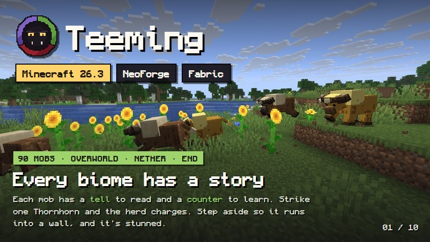

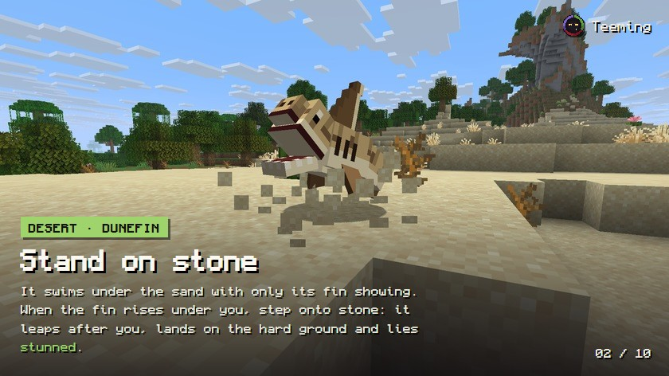

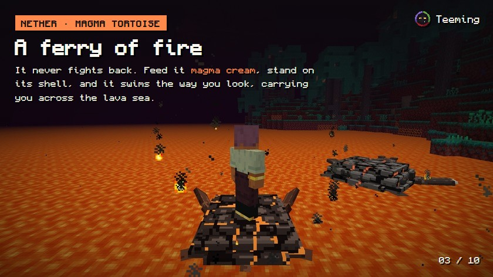

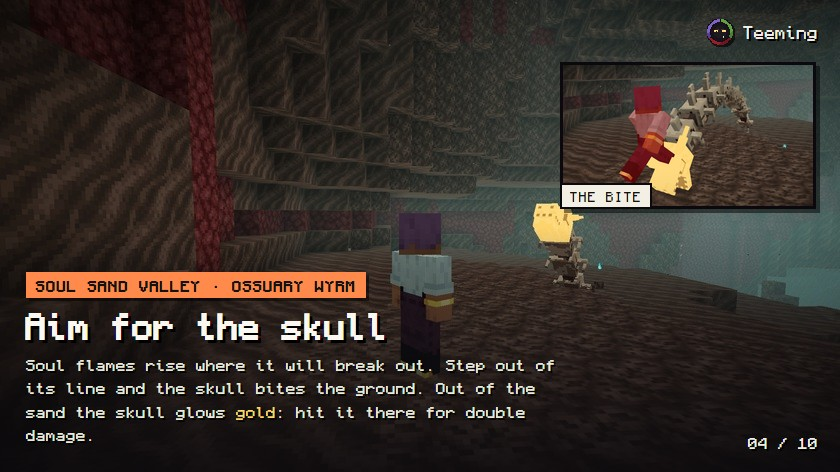

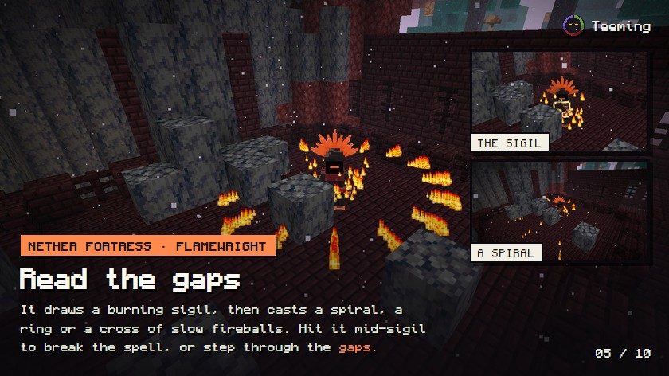

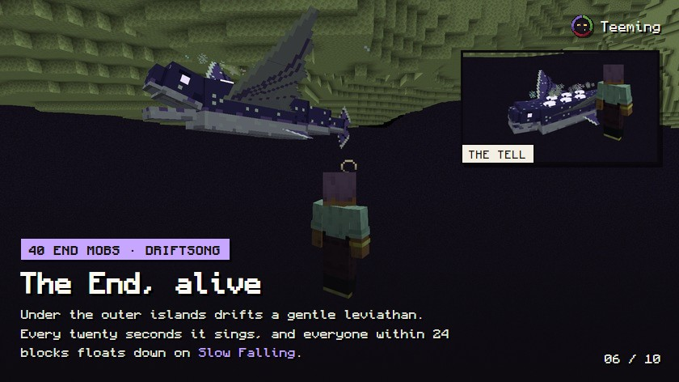

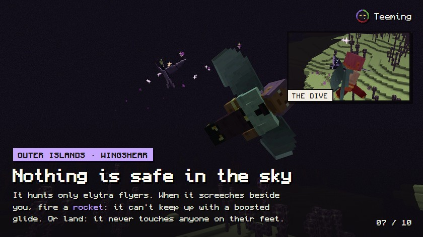

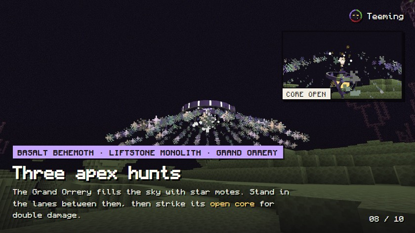

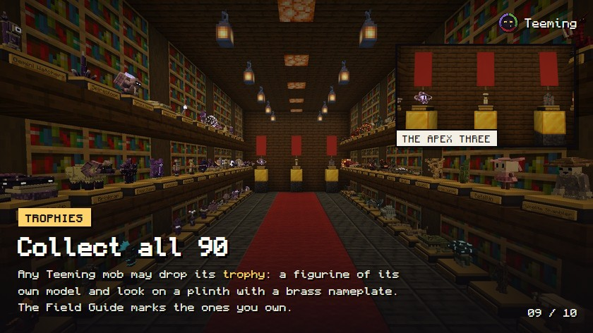

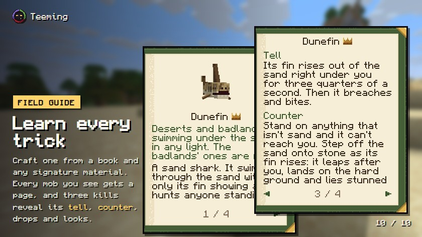
Gallery

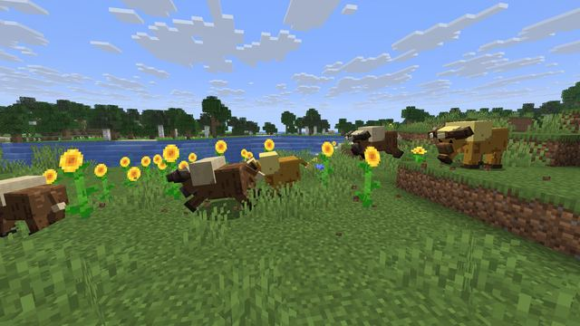

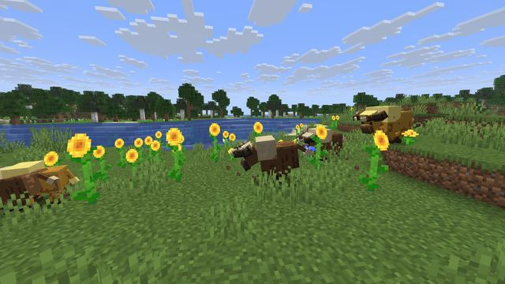

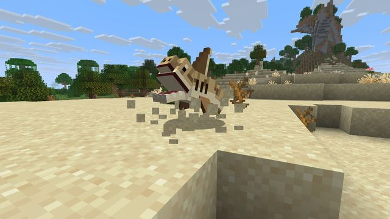

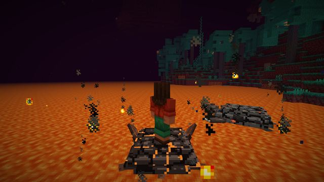

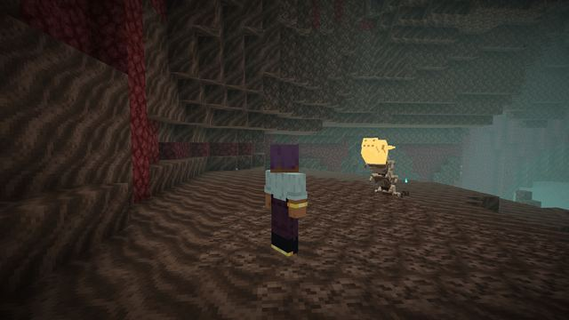

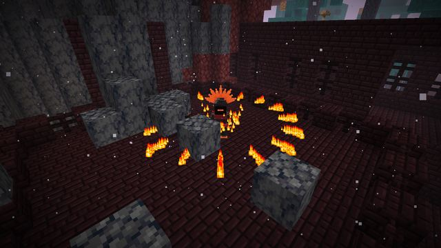

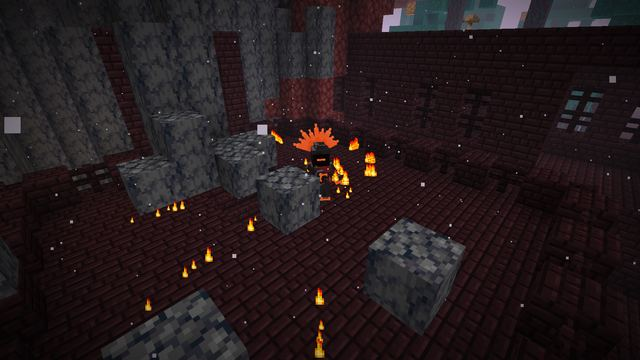

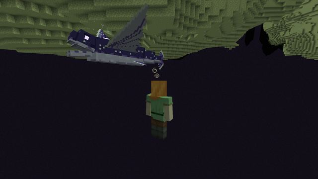

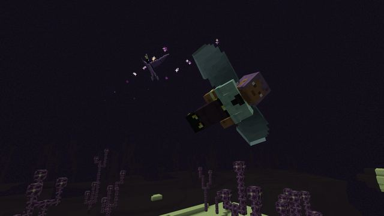

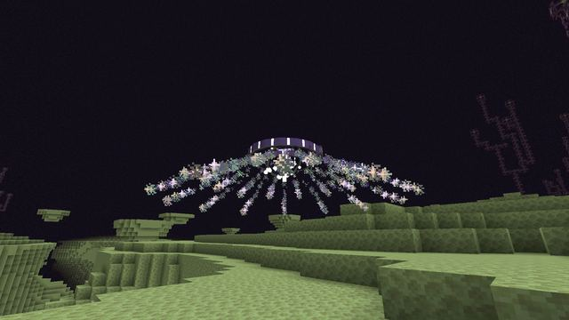

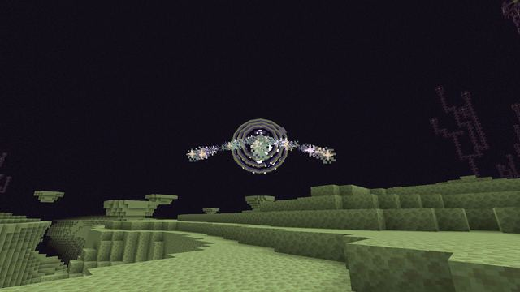

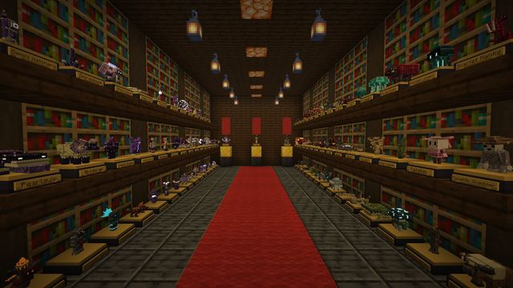

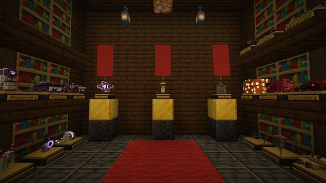

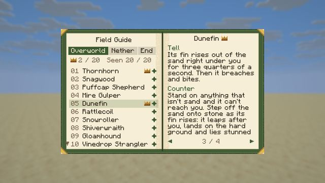

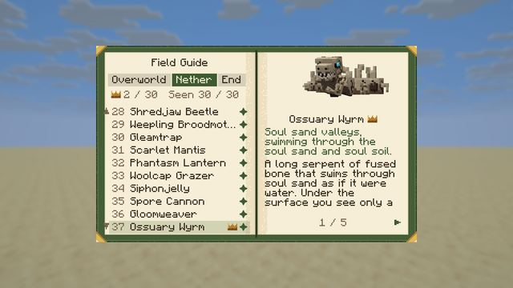

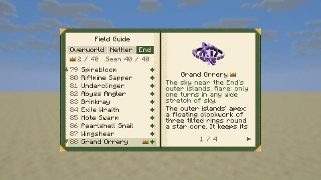

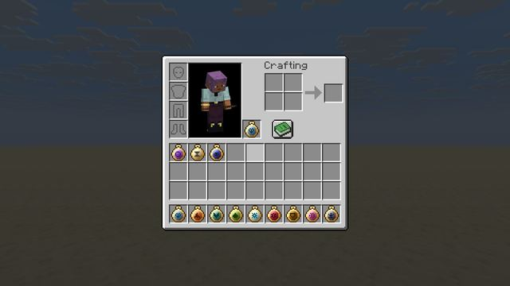

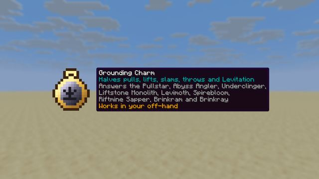

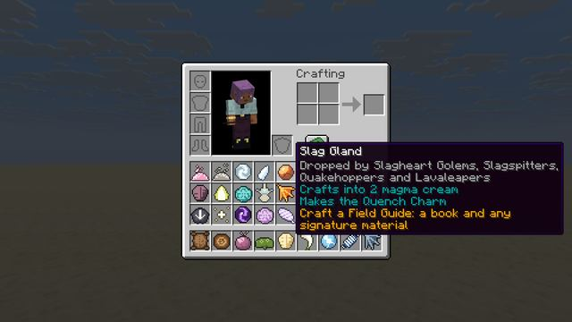
Modpack makers: use the CurseForge download. GitHub Releases is for manual installs and testing.